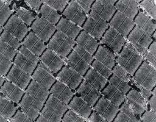

http://www.fitnesstribune.com/arc/ift89_2.html
Muskelschäden durch körperliche Aktivität sind nicht zu unterschätzen
Sport und Medizin von Dr.med Beat Knechtle
Muskelschädigung durch Ausdauerbelastungen
Im Gegensatz zu Krafttraining führt Ausdauertraining zu weniger Muskelschäden. Dennoch können auch bei Ausdauerbelastungen Muskelschäden auftreten. Dabei kommt es auf die Art der Belastung an. Intensives Radfahren und Abwärtsrennen als exzentrische Belastung führen zu grösseren Muskelschäden als extensives Radfahren. Generell führen die exzentrischen Belastungen zu grösseren Muskelschäden.
Muskelschäden bei langen Läufen. Intensives Laufen als eine der häufigsten Ausdauerbelastungen führt zu einer Schädigung der Muskelfaser. Dies zeigt sich in einem Anstieg der muskelzellulären Enzyme LDH (Laktatdehydrogenase) und CK (Creatin-Kinase), die auch noch mehrere Tage nach der Belastung erhöht sein können. Als weiteres Zeichen der muskelzellulären Schädigung kommt es zu einem Anstieg des Kalium von Werten um 4.0 mmol/l auf 5.5 mmol/l im Plasma. Bei sehr langen Dauerbelastungen kommt es zu ultrastrukturellen Schäden der Muskelfaser Es ist nachgewiesen worden, dass Ultraläufe zu einer Schädigung der Muskelfaser sowie der Mitochondrien in der Muskelfaser führen. Lange Laufbelastungen führen in der Folge zu einer Abnahme der Fasergrösse. Die Degeneration betrifft vor allem die Typ II-Fasern, während die Typ I-Fasern eher zunehmen. Auf Grund der Verminderung der Muskelmasse wird die oxidative Kapazität der Skelettmuskeln eingeschränkt. Neben der Schädigung an den Muskelfasern sowie den Mitochondrien wird auch eine Degeneration der peripheren Nerven nachgewiesen.
Exzentrische Belastung durch Radfahren. Obwohl Radfahren per se eine konzentrische Belastung ist, kann Radfahren auch exzentrisch ausgeführt werden. Auch hier kommt es zu Muskelkater (DOMS), wobei der Muskelstoffwechsel allerdings nicht negativ beeinflusst wird.
Muskelschädigung durch exzentrisches Krafttraining
Im Gegensatz zum Ausdauertraining wird die Muskelfaser beim Krafttraining mehr geschädigt. Exzentrisches Krafttraining führt zu einer ausgeprägten Muskelhypertrophie, dies geht aber auch mit grösseren muskelzellulären Schäden einher als bei konzentrischem Krafttraining. Nach exzentrischem Krafttraining sind rund 80 % der Muskelfasernzerrissen, nach konzentrischem Krafttraining hingegen nur etwa ein Drittel.

Histologische Veränderungen. Krafttraining führt zu einer Zerstörung der Z-Scheibe (siehe Abbildung 1 mit intakter Z-Scheide) sowie zu einer Ansammlung von Entzündungszellen. Neutrophile und Makrophagen steigen signifikant hoch an. Auch das Bindegewebe wird in Mitleidenschaft gezogen durch eine ausgeprägte entzündliche Reaktion in der Umgebung der Muskelfaser.
Eingeschränkte Energiegewinnung. Intensives exzentrisches Training führt daher auch zu Schäden im Bereich der Energiegewinnung. Es kommt neben einem Verlust der myofibrillären Organisation auch zu einer Veränderung der Mitochondrien, einer Ansammlung von Entzündungszellen und einer unvollständigen Glykogenresynthese. Nach einem intensiven Krafttraining kommt es zu einer Zunahme der Dichte der subsarkolemmalen Mitochondrien als Zeichen einer Strukturschädigung durch die Belastung. Wenn es zu einer Sarkopenie kommt, werden vermehrt Veränderungen in den Mitochondrien nachgewiesen. In der Muskulatur von Kraftsportlern ist nach jahrelangem Training das Zytoplasmavolumen der Muskelfibrillen geringer als bei Normalpersonen.
Laborchemische Veränderungen. Die CK steigt im Blut an und es kommt zu einem Anstieg von Hydroxyprolin und Hydroxylysin im Urin als Zeichen der Zellschädigung.
Muskelkater (DOMS)
Muskelkater tritt beim Krafttraining häufiger auf als beim Ausdauertraining, da die Muskulatur stärker belastet werden kann. Beim Muskelkater oder DOMS (Delayed Onset of Muscle Soreness) genannt, handelt es sich um eine mechanisch ausgelöste Schädigung der kontraktilen Elemente und der bindegewebigen Strukturen der Skelettmuskulatur, in deren Folge eine Reihe von Reparaturmechanismen wirksam werden. Die pathophysiologische Bedeutung der beobachteten metabolischen und inflammatorischen Faktoren des Überlastungssyndroms ist noch weitgehend ungeklärt.
Das Problem der Muskelüberlastung. Die auffälligsten Symptome der Muskelüberlastung sind die mit etwa 12- bis 24-stündiger Verzögerung auftretenden Muskelschmerzen und der Kraftverlust. Letzterer geht eindeutig über eine schmerzbedingte Schonung hinaus und bleibt zumindest teilweise auch nach Verschwinden der Schmerzsymptomatik noch erhalten. Die Muskelüberlastung führt zu einer Zerrung der Z-Streifen der Myofibrillen. Der Anstieg von muskelzellulären Enzymen wie der CK und der Transaminasen können als Zeichen solcher Strukturschäden interpretiert werden.
Die Bedeutung der CK. Der Muskelkater ist die einfachste Form der muskelzellulären Überlastung. Aus lädierten Zellen treten Proteine und Enzyme aus. Ein einfacher Indikator zur Kennzeichnung muskelzellulärer Überlastungen ist der Anstieg der CK.
Trainieren nach DOMS. Unmittelbar an eine eingetretene Muskelüberlastung sollten keine trainingswirksamen Reize angeschlossen werden. Vielmehr sollten in dieser Phase leichte Übungen zur Erhaltung von Beweglichkeit und Koordination durchgeführt werden.
Diätetische Behandlung bei DOMS. Bei DOMS liegt ein entzündlicher Prozess zur Reparation des Schadens vor. Es ist bekannt, dass Fischöl einen günstigen Einfluss auf entzündliche Prozesse hat. Dennoch kann Fischöl auch in Kombination mit Flavonen, die ebenfalls entzündungsmodulierend wirken können, keinen positiven Effekt in der Reparaturphase nach DOMS bringen.
Muskelschaden bei Übertraining
Übertraining führt zu Schäden an der Muskelfaser. Die Schädigung betrifft vor allem die Myofibrillen selber sowie die Mitochondrien im Zytoplasma der Faser. Die Schädigung der Faser sowie deren Erholung ist ein lange anhaltender Prozess. In Muskelbiopsien nach Marathonläufen sind Zerstörungen der Muskelfasern und Entzündungszellen in der Woche nach der Belastung nachweisbar. Und noch drei bis vier Wochen nach der Belastung sind Reparaturveränderungen nachweisbar, die bis zu zwölf Wochen nach der Überbelastung bestehen bleiben.
Schädigung der Myofibrille. Auf Niveau der Muskelfibrille liegen myofibrilläre und neuromuskuläre Schäden vor. Es kommt zu einer verminderten Produktion der Myosin-Ketten sowie zu einer Abnahme der Dichte der b-Adrenorezeptoren mit einer verminderten Katecholamin-Sensitivität. Es scheint auch zu einem Untergang von Myofibrillen zu kommen. Die nekrotischen Fibrillen werden durch Bindegewebe ersetzt.
Schädigung der Muskelfaser. Auf Niveau der Muskelfaser können elektronenmikroskopisch unregelmässige Verteilungen der Muskelfaser und abnorme Einschlüsse von Fett in der Muskelfaser nachgewiesen werden. Im Bereich der Z-Scheibe kommt es zu Einrissen.
Schädigung der Mitochondrien. In den Mitochondrien können elektronenmikroskopisch Veränderungen der Mitochondrienstruktur und Einschlüsse in Mitochondrien nachgewiesen werden. Es kann auch zu einer ausgeprägten Abnahme der Dichte der Mitochondrien kommen.
Der indirekte Nachweis des Muskelschadens
Der Muskelschaden kann durch eine Erhöhung der Konzentration von Muskelmetaboliten im Plasma nachgewiesen werden. Kalium, Myoglobin, LDH, GOT, Harnstoff und CK sind im Blut bei ausgedehnten Muskelschäden erhöht. Zusätzlich steigen auch die Interleukine IL-1b und IL-6 an. Die aus der Muskelfaser stammenden Metabolite sind einen Tag nach der exzentrischen Belastung am höchsten. Anhand einer Zwillingsstudie konnte gezeigt werden, dass bei Zwillingen wohl die Muskelmetabolite nach exzentrischer Belastung gleich hoch ansteigen, aber die Kraft nach der Belastung unterschiedlich eingeschränkt wird. Somit liegt keine genetische Prädisposition im Ausmass der Ausbildung des Schadens nach exzentrischer Belastung vor.
Die Probleme einer Muskelschädigung
Eine ausgeprägte muskelzelluläre Schädigung mit Defektheilung in der Fibrille hat einen negativen Einfluss auf den Energiestoffwechsel und im speziellen auf die Glykogenresynthese.
Verminderte Glykogenresynthese. Erniedrigte Mengen an Muskelglykogen auf Grund von hartem Training führen zu einer Einschränkung der Leistung und zentraler Müdigkeit. Ein weiteres Problem der geschädigten Muskelfaser ist die Beeinträchtigung der Resynthese des Muskelglykogens. Wird die Belastungsintensität bei vorgeschädigter Muskulatur aufrechterhalten, so wird die Gewebereparatur verhindert und der entzündliche Zustand mit chronisch erhöhten Plasmakonzentrationen an immunsuppressiven Stresshormonen aufrechterhalten. Die Glykogenresynthese in der Muskelfaser ist nach intensiven Belastungen für bis zu zehn Tage gehemmt. Eine adäquate Supplementation von Kohlenhydraten und Eiweiss führt zu tieferen Laktatwerten und höheren Werten von Glukose und GH (Wachstumshormon) nach einer intensiven Belastung.
Verzögerte Muskelerholung. Die oft erwähnte Meinung, Training wenige Tage nach einer intensiven Belastung verbessere die Muskelerholung, ist falsch. Die Muskelerholung wird verzögert. Auch wenn der Sportler wenige Tage nach der intensiven Belastung das Gefühl hat, die Muskeln seien wieder voll einsatzbereit, wird er zu hart trainieren. Nach einer intensiven Phase mit exzentrischem Krafttraining kann keine kompensatorische Hypertrophie des Muskels nachgewiesen werden.
Folgen des Muskelschadens. Die Folgen von nicht ausgeheilten Muskelschäden sind chronische Muskelschmerzen, andauernder Muskelkater, Härte und Steifigkeit der Muskeln, sowie eingeschränkte Beweglichkeit und Krafteinbusse.